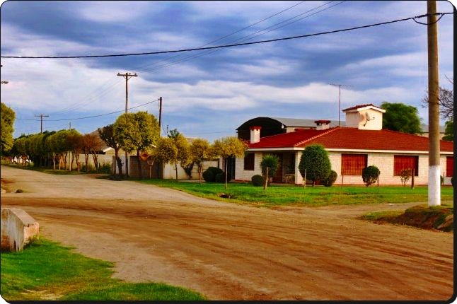
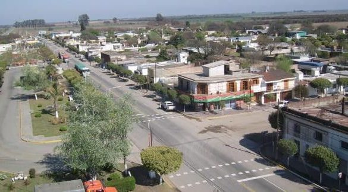
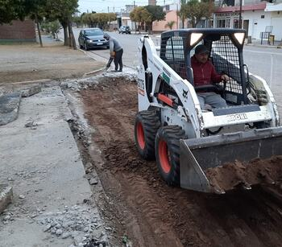
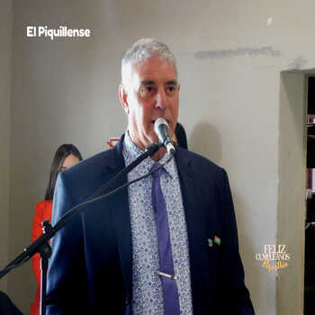
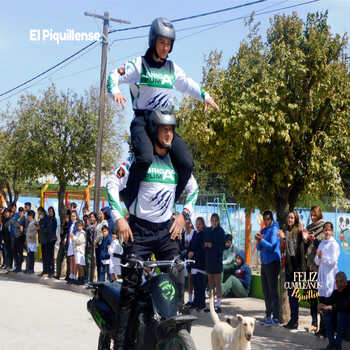
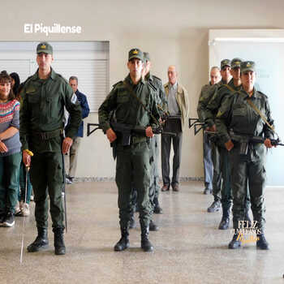

Piquillín es una localidad situada en el departamento Río Primero, provincia de Córdoba, Argentina.
Tiene 2500 habitantes, y se encuentra situada sobre la RN 19, a 40 km de la Ciudad de Córdoba, aproximadamente.
La localidad debe su nombre al arbusto forrajero piquillín, que era muy abundante en la zona.
La actividad económica predominante es la agricultura y sus derivados, como empresas de transporte de granos, acopios y ventas de maquinaria agrícola.
Es un pueblo careciente de industria locales, por lo que sus habitantes deben trasladarse a localidades vecinas para conseguir empleo.

Instituciones locales

Piquillín cuenta con distintas instituciones las que cuenta son: Municipalidad, Cooperativa de agua, Cooperativa de luz, Jardin de infantes, Escuela Primaria, Escuela secundaria, Dispensario municipal, Comisaria.
Noticias
Obras en piquillín
Se esta llevando a cabo la refuncionalizacion de badenes para poder tener un mejor control pluvial


Aniversario 134º de Piquillín.
134 años pasaron desde la inauguración de la Estación Piquillín, un 13 de octubre de 1888. Con motivo de un nuevo aniversario de la localidad que tomó el nombre de un arbusto que se encontraba de manera abundante en la zona, el municipio organizó un acto protocolar para conmemorar esta importante fecha, con el lema «Piquillín, 134 años de crecimiento».
El jefe municipal dijo en su discurso que este año ha estado marcado por la obra pública, mencionando las nuevas cuadras de adoquinando que se están realizando en la localidad, la refuncionalización de la terminal de ómnibus y la inminente ampliación del edificio del Centro de Salud, para poder cumplir con «la promesa de tener un médico las 24 horas en nuestro pueblo».
Tras la inauguración del pavimento sobre la calle Vélez Sarsfield, en esa misma arteria, los presentes pudieron disfrutar del show brindado por la Brigada Puma y por la División Canes de la Policía de la Provincia de Córdoba.
Del acto también participaron efectivos de Gendarmería Nacional y la Banda Infanto Juvenil de Villa Santa Rosa.


